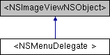

Qt 4.8
Public Functions
|
List of all members
<NSMenuDelegate > Protocol Reference
Inheritance diagram for <NSMenuDelegate >:

Public Functions
(void)
-
menuNeedsUpdate:
Detailed Description
Definition at line
130
of file
qsystemtrayicon_mac.mm
.
Functions
◆
menuNeedsUpdate:()
- (void NSMenuDelegate) menuNeedsUpdate:
(NSMenu *)
menu
The documentation for this protocol was generated from the following file:
/src/gui/util/
qsystemtrayicon_mac.mm
Qt 4.8 Source Code Browser